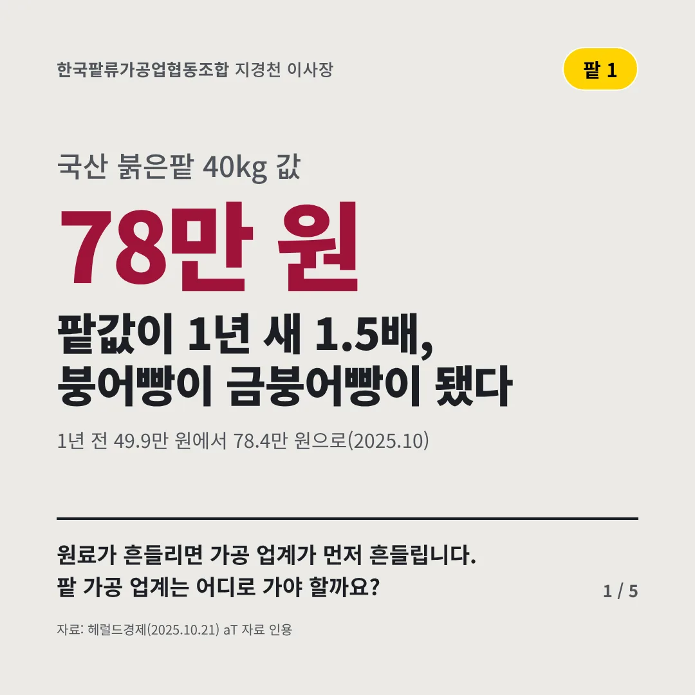
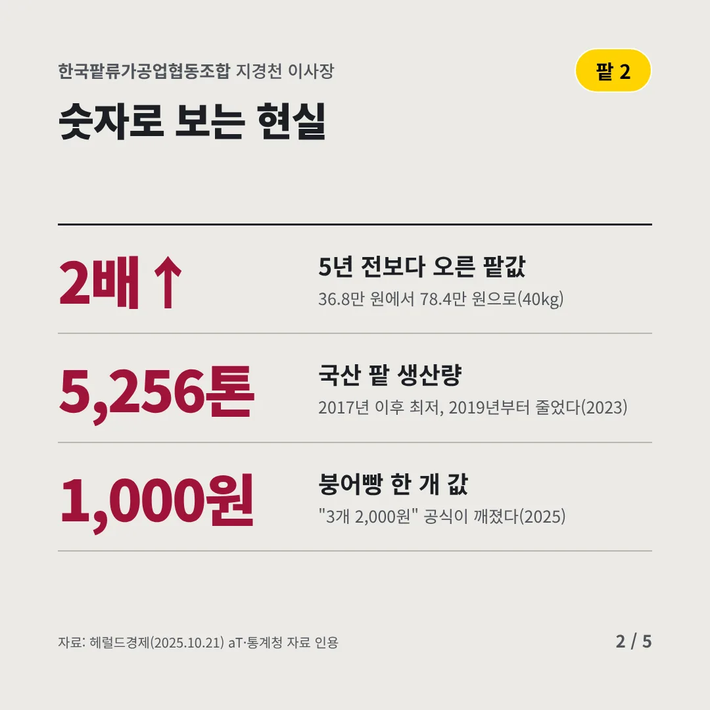
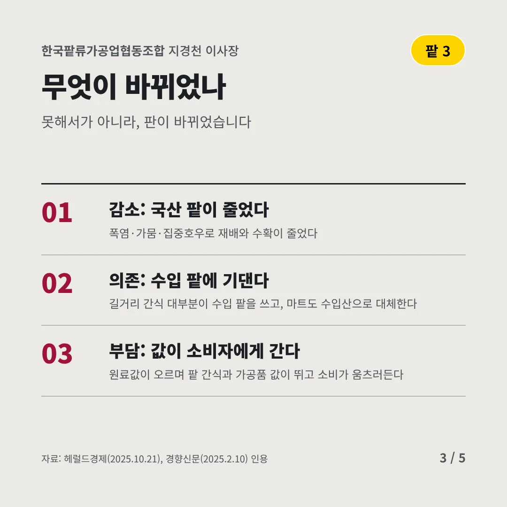
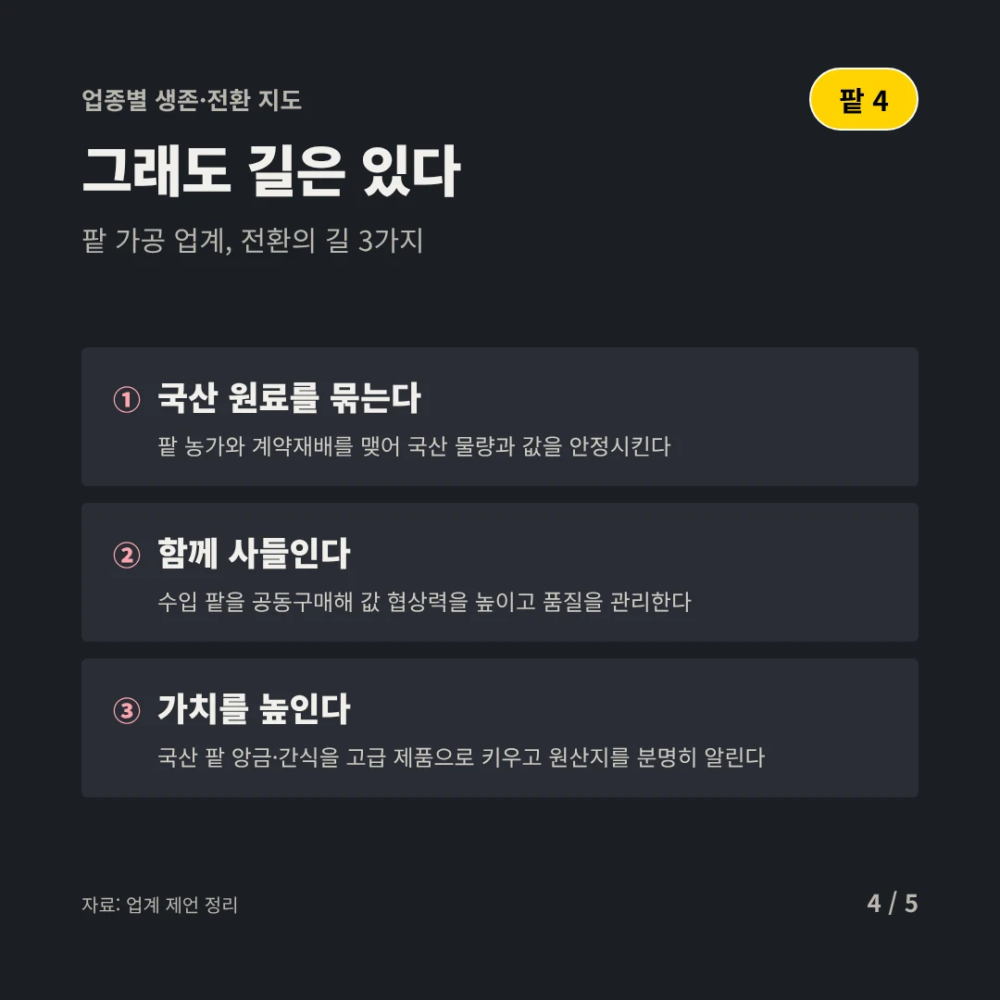
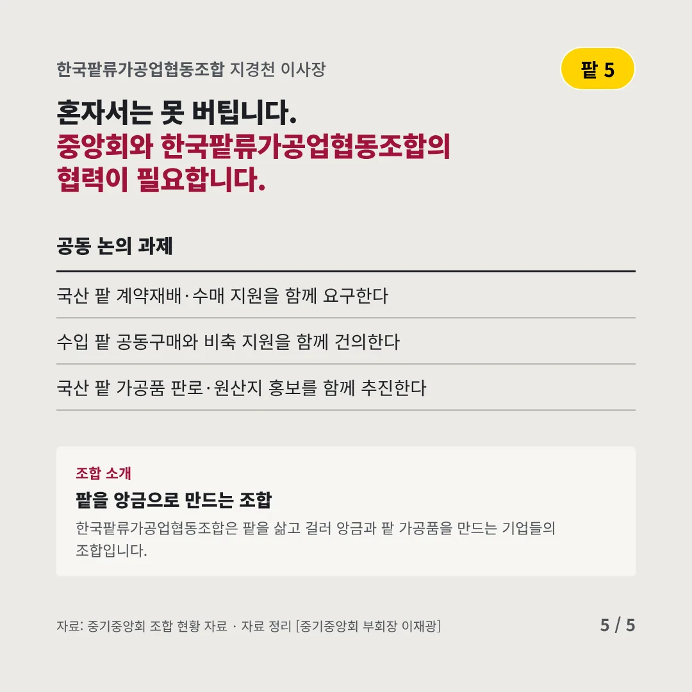
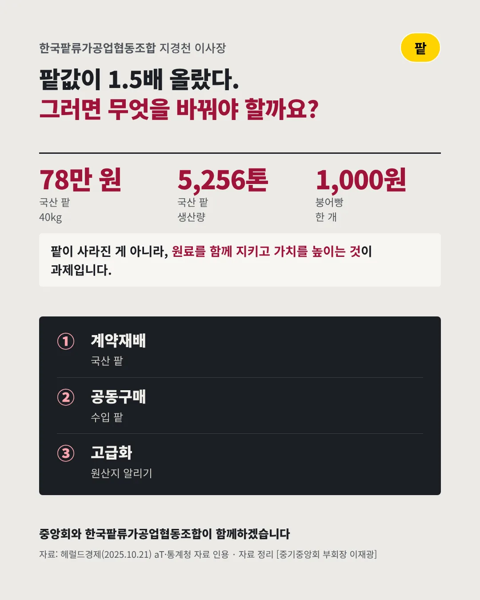

한국팥류가공업협동조합
팥값이 1년 새 1.5배, 붕어빵이 금붕어빵이 됐다
78만 원 국산 붉은팥 40kg 값






원료가 흔들리면 가공 업계가 먼저 흔들립니다. 팥 가공 업계는 어디로 가야 할까요?
숫자로 보는 현실
- 2배↑5년 전보다 오른 팥값36.8만 원에서 78.4만 원으로(40kg)
- 5,256톤국산 팥 생산량2017년 이후 최저, 2019년부터 줄었다(2023)
- 1,000원붕어빵 한 개 값"3개 2,000원" 공식이 깨졌다(2025)
무엇이 바뀌었나
- 감소: 국산 팥이 줄었다폭염·가뭄·집중호우로 재배와 수확이 줄었다
- 의존: 수입 팥에 기댄다길거리 간식 대부분이 수입 팥을 쓰고, 마트도 수입산으로 대체한다
- 부담: 값이 소비자에게 간다원료값이 오르며 팥 간식과 가공품 값이 뛰고 소비가 움츠러든다
그래도 길은 있다
- 국산 원료를 묶는다팥 농가와 계약재배를 맺어 국산 물량과 값을 안정시킨다
- 함께 사들인다수입 팥을 공동구매해 값 협상력을 높이고 품질을 관리한다
- 가치를 높인다국산 팥 앙금·간식을 고급 제품으로 키우고 원산지를 분명히 알린다
한 장 요약

조합 소개
한국팥류가공업협동조합은 팥을 삶고 걸러 앙금과 팥 가공품을 만드는 기업들의 조합입니다.
자료: 헤럴드경제(2025.10.21), 경향신문(2025.2.10)